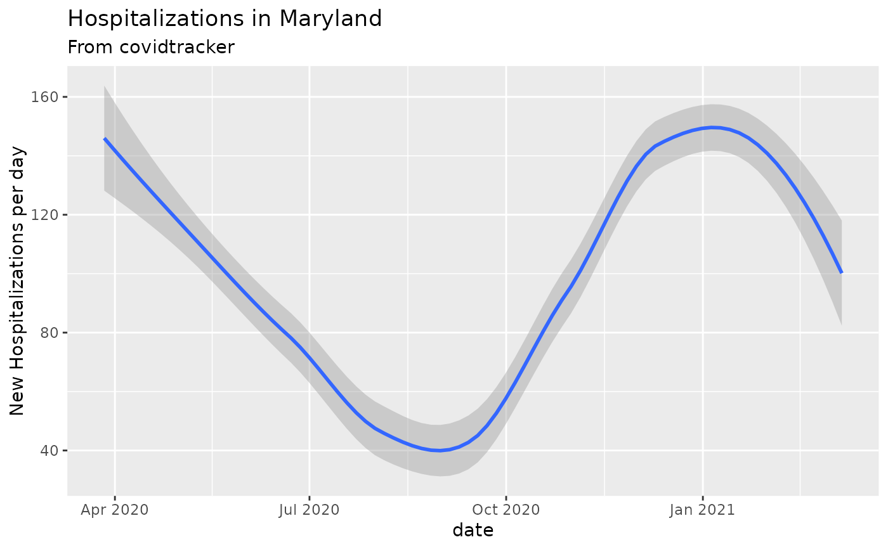

Get data from the COVID tracking project https://covidtracking.com/ including daily historical data on testing results, hospitalizations, deaths, and ICU and ventilated patients.
covidtracker_data()A tidy tbl_df
From the COVID Tracking Project website:
The COVID Tracking Project collects information from 50 US states, the District of Columbia, and 5 other US territories to provide the most comprehensive testing data we can collect for the novel coronavirus, SARS-CoV-2. We attempt to report positive and negative results, pending tests, and total people tested for each state or district currently reporting that data.
Other data-import:
acaps_government_measures_data(),
acaps_secondary_impact_data(),
apple_mobility_data(),
beoutbreakprepared_data(),
cci_us_vaccine_data(),
cdc_aggregated_projections(),
cdc_excess_deaths(),
cdc_social_vulnerability_index(),
coronadatascraper_data(),
coronanet_government_response_data(),
cov_glue_lineage_data(),
cov_glue_newick_data(),
cov_glue_snp_lineage(),
descartes_mobility_data(),
ecdc_data(),
econ_tracker_consumer_spending,
econ_tracker_employment,
econ_tracker_unemp_data,
economist_excess_deaths(),
financial_times_excess_deaths(),
google_mobility_data(),
government_policy_timeline(),
jhu_data(),
jhu_us_data(),
kff_icu_beds(),
nytimes_county_data(),
oecd_unemployment_data(),
owid_data(),
param_estimates_published(),
test_and_trace_data(),
us_county_geo_details(),
us_county_health_rankings(),
us_healthcare_capacity(),
us_hospital_details(),
us_state_distancing_policy(),
usa_facts_data(),
who_cases()
Other case-tracking:
align_to_baseline(),
beoutbreakprepared_data(),
bulk_estimate_Rt(),
combined_us_cases_data(),
coronadatascraper_data(),
ecdc_data(),
estimate_Rt(),
jhu_data(),
nytimes_county_data(),
owid_data(),
plot_epicurve(),
test_and_trace_data(),
usa_facts_data(),
who_cases()
library(dplyr)
library(ggplot2)
res = covidtracker_data()
#> Warning: One or more parsing issues, see `problems()` for details
colnames(res)
#> [1] "date" "fips" "state"
#> [4] "positive" "negative" "death"
#> [7] "pending" "hospitalized" "hospitalizedCurrently"
#> [10] "recovered" "inIcuCumulative" "inIcuCurrently"
#> [13] "onVentilatorCurrently" "onVentilatorCumulative" "dateChecked"
#> [16] "dataQualityGrade"
dim(res)
#> [1] 20780 16
dplyr::glimpse(res)
#> Rows: 20,780
#> Columns: 16
#> $ date <date> 2021-03-07, 2021-03-07, 2021-03-07, 2021-03-07…
#> $ fips <chr> "00002", "00001", "00005", "00060", "00004", "0…
#> $ state <chr> "AK", "AL", "AR", "AS", "AZ", "CA", "CO", "CT",…
#> $ positive <int> 56886, 499819, 324818, 0, 826454, 3501394, 4366…
#> $ negative <int> NA, 1931711, 2480716, 2140, 3073010, NA, 219945…
#> $ death <int> 305, 10148, 5319, 0, 16328, 54124, 5989, 7704, …
#> $ pending <int> NA, NA, NA, NA, NA, NA, NA, NA, NA, NA, 8544, N…
#> $ hospitalized <int> 1293, 45976, 14926, NA, 57907, NA, 23904, NA, N…
#> $ hospitalizedCurrently <int> 33, 494, 335, NA, 963, 4291, 326, 428, 150, 104…
#> $ recovered <int> NA, 295690, 315517, NA, NA, NA, NA, NA, 29570, …
#> $ inIcuCumulative <int> NA, 2676, NA, NA, NA, NA, NA, NA, NA, NA, NA, 9…
#> $ inIcuCurrently <int> NA, NA, 141, NA, 273, 1159, NA, NA, 38, 13, NA,…
#> $ onVentilatorCurrently <int> 2, NA, 65, NA, 143, NA, NA, NA, 16, NA, NA, NA,…
#> $ onVentilatorCumulative <int> NA, 1515, 1533, NA, NA, NA, NA, NA, NA, NA, NA,…
#> $ dateChecked <dttm> 2021-03-05 03:59:00, 2021-03-07 11:00:00, 2021…
#> $ dataQualityGrade <lgl> NA, NA, NA, NA, NA, NA, NA, NA, NA, NA, NA, NA,…
# Hospitalizations by day in Maryland
covidtracker_data() %>%
dplyr::filter(state=='MD') %>%
add_incidence_column(count_column='hospitalized') %>%
ggplot(aes(x=date,y=inc)) + geom_smooth() +
ylab("New Hospitalizations per day") +
ggtitle('Hospitalizations in Maryland', subtitle = 'From covidtracker')
#> Warning: One or more parsing issues, see `problems()` for details
#> `geom_smooth()` using method = 'loess' and formula 'y ~ x'
#> Warning: Removed 22 rows containing non-finite values (stat_smooth).
